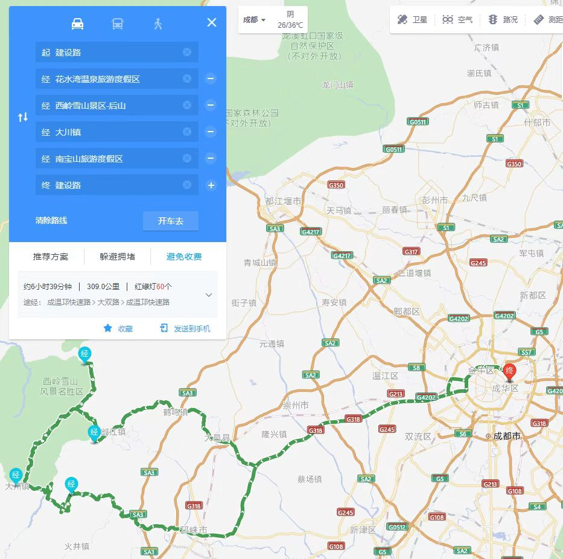
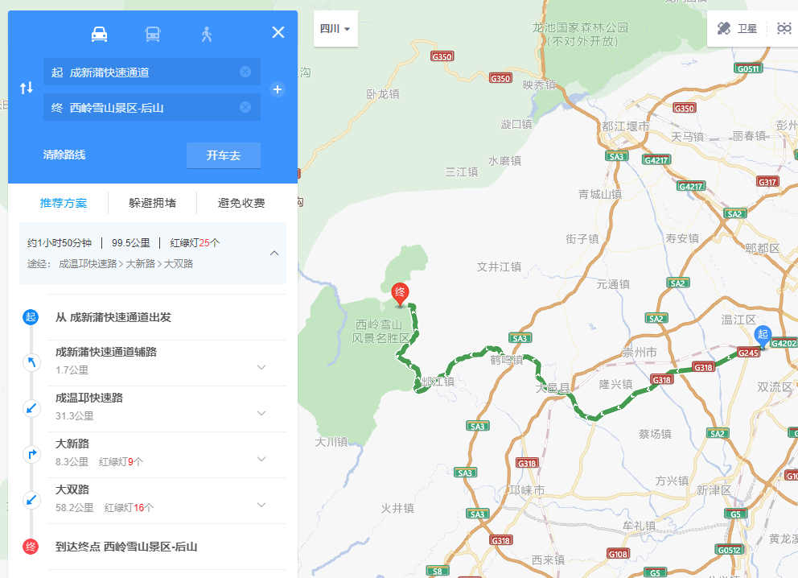
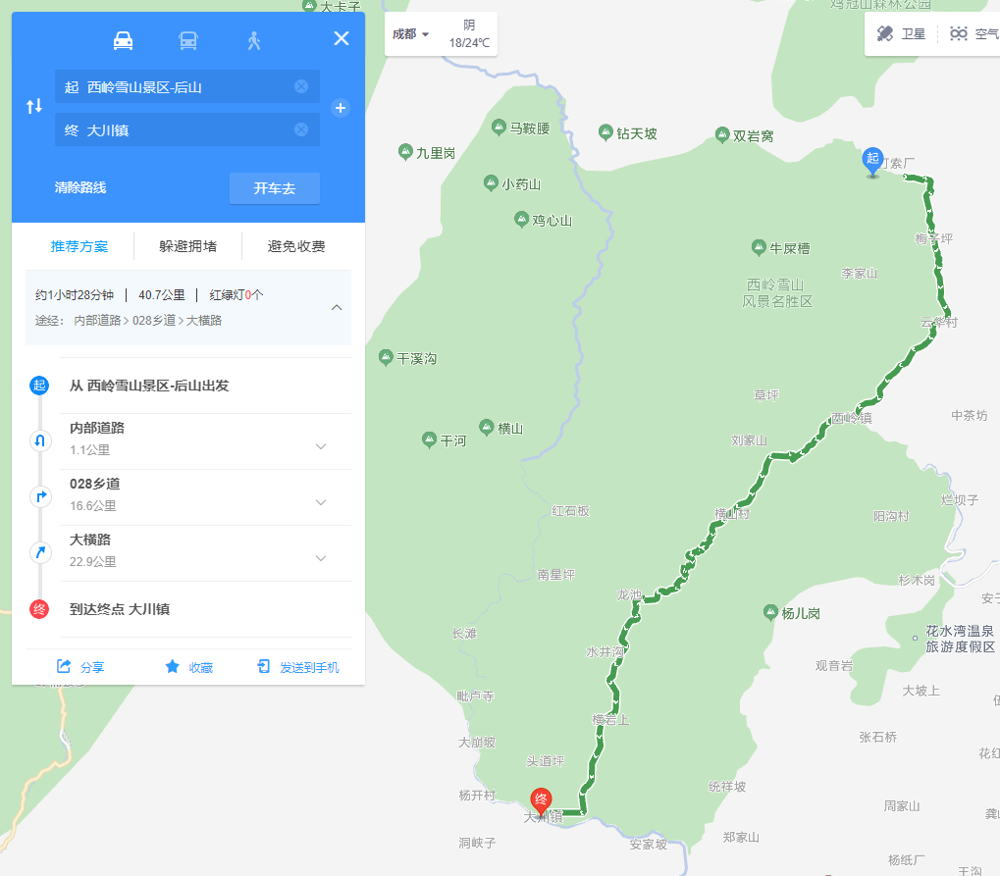
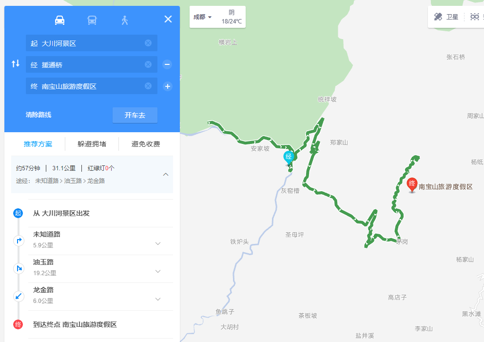
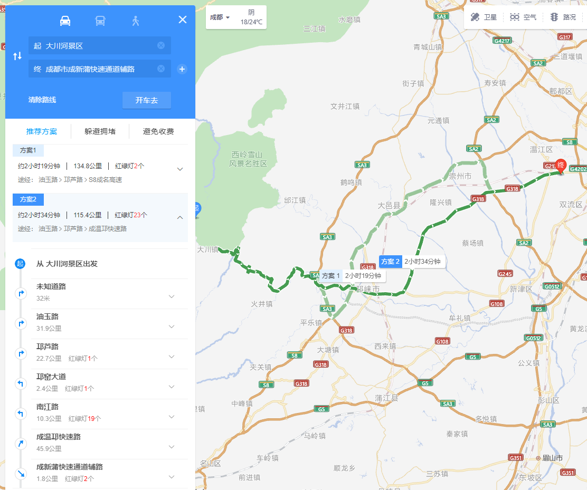

大川镇骑行线路
路线概要
- 路线：成都-花水湾-西岭雪山后山-(横山岗到大川:自行车导航)-芦山县大川镇-南宝山-成都。
- 特点：延途风景都很不错，大川镇是在丛林里穿过，据说非常巴适。
- 时间：当天来回
- 集合时间：8:30
- 集合地点：成新浦快速通道+双九路交叉口，出城方向侧（比之前位置好识别一点）
- 其他： 1.提前做好24小时核酸备用。 2.头盔耳机充电、安装。 3.安装维迈通多多APP，家里出发时就加入骑行对讲。 4.大川、援通桥路段：路上有青苔很滑，减速行驶，有水时要特别小心。 5.路线共计约：7小时，286.7km。加上各自回家的路程，共计9小时、300+km。
详细路线
- 1.成都-西岭雪山景区-后山：成新蒲快速通道(1.7km)->成温邛快速路(30.8km)->大新路(8.3km)->大双路(58.2km)，99.5km，约2小时。
- 2.芦山县大川镇：西岭雪山后山->内部路|乡道->大横路，40.7km，约1.5小时。
- 3.南宝山：大川镇->未知道路(5.9km)->油玉路(19.2km)->龙金路(6km)，途经援通桥，31.1km，约1小时。
- 4.回成都：油玉路(31.9km)->邛芦路(22.7km)->邛窑大道(2.4km)->南江路(10.3km)->成温邛快速路(45.9km)->成新蒲快速路，115.4km，约2.5小时。

路线图
成都-西岭雪山景区-后山
成都-西岭雪山景区-后山：成新蒲快速通道(1.7km)->成温邛快速路(30.8km)->大新路(8.3km)->大双路(58.2km)，99.5km，约2小时。

芦山县大川镇
芦山县大川镇：西岭雪山后山->内部路|乡道->大横路，40.7km，约1.5小时。 
南宝山
南宝山：大川镇->未知道路(5.9km)->油玉路(19.2km)->龙金路(6km)，途经援通桥，31.1km，约1小时。

回成都
回成都：油玉路(31.9km)->邛芦路(22.7km)->邛窑大道(2.4km)->南江路(10.3km)->成温邛快速路(45.9km)->成新蒲快速路，115.4km，约2.5小时。
